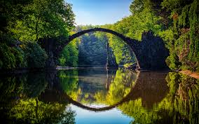
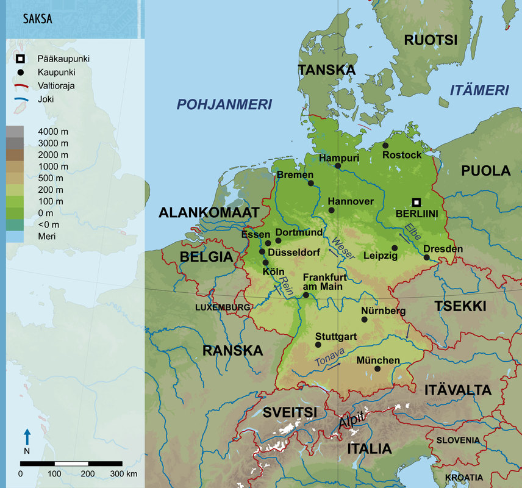
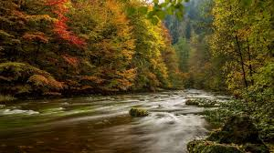
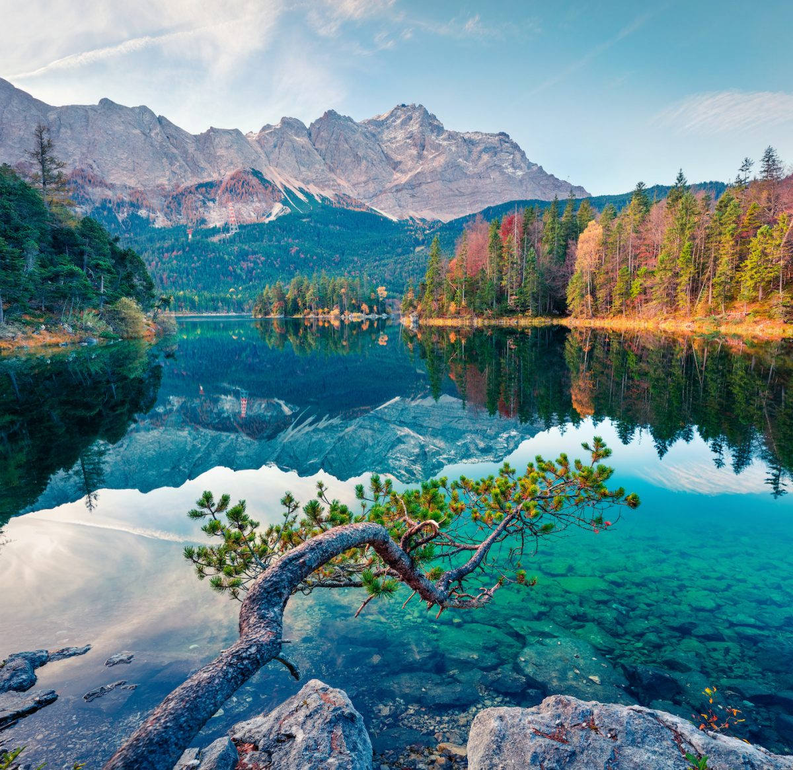

Saksa ulottuu Itä- ja Pohjanmereltä aina Alpeille asti ja käsittää maastotyyppejä alavista tasangoista vuoristoihin. Pohjois-Saksan viljavat alangot vaihtuvat Keski-Saksassa metsien ja peltojen täplittämäksi kumpuilevaksi ylängöksi. Maan eteläisimmät alueet ovat vuoristoa: lounaassa on Schwarzwaldin matalahko, asutettu vuoristo ja etelässä Alpit.
 Saksaa halkovat Euroopan suurimmat joet: Rein ja Elbe, jotka laskevat Pohjanmereen, sekä Tonava, joka saa alkunsa Schwarzwaldin vuoristosta, virtaa itään ja laskee Mustaanmereen Saksassa on myös järviä, suurimpana niistä Reinin suvannon Bodenjärvi sekä järvialueita, joista laajimmat, jääkauden muovaamat Mecklenburgin ja Pommerin järvialueet sijaitsevat maan koillisosassa.
Saksan korkein kohta on Alpeilla sijaitseva Zugspitze, joka on 2 962 metriä korkea. Sen rinteellä sijaitsee Garmisch-Partenkirchenin kaupunki, joka on yksi Saksan merkittävimmistä talviurheilukeskuksista.
